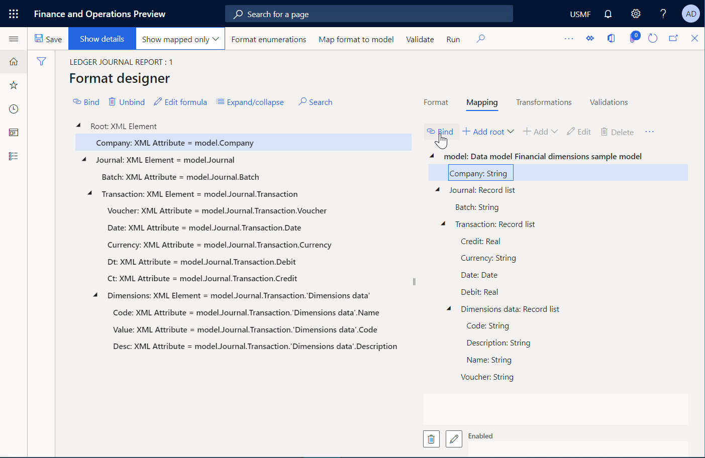

ER Use financial dimensions as a data source (Part 3 - Design the report)
The following steps explain how a user assigned to the system administrator or electronic reporting developer role can configure an Electronic reporting (ER) model to use financial dimensions as a data source for ER reports. These steps can be performed in any company.
To complete these steps, you must first complete the steps in the "ER Use financial dimensions as a data source (Part 2: Model mapping)" procedure.
Design a report to present financial dimensions
- Go to Organization administration > Electronic reporting > Configurations.
- In the tree, select 'Financial dimensions sample model'.
- Click Create configuration to open the drop dialog.
- In the New field, enter 'Format based on data model Financial dimensions sample model'.
- Use the model that was created in advance as the data source for your new report.
- In the Name field, type 'Ledger journal report'.
- In the Data model definition field, select Entry.
- Click Create configuration.
- Click Designer.
- Click Add root to open the drop dialog.
- In the tree, select 'XML\Element'.
- In the Name field, type 'Root'.
- Click OK.
- Click Add to open the drop dialog.
- In the tree, select 'XML\Attribute'.
- In the Name field, type 'Company'.
- Click OK.
- Click Add to open the drop dialog.
- In the tree, select 'XML\Element'.
- In the Name field, type 'Journal'.
- Click OK.
- In the tree, select 'Root: XML Element\Journal: XML Element'.
- Click Add to open the drop dialog.
- In the tree, select 'XML\Attribute'.
- In the Name field, type 'Batch'.
- Click OK.
- Click Add to open the drop dialog.
- In the tree, select 'XML\Element'.
- In the Name field, type 'Transaction'.
- Click OK.
- In the tree, select 'Root: XML Element\Journal: XML Element\Transaction: XML Element'.
- Click Add to open the drop dialog.
- In the tree, select 'XML\Attribute'.
- In the Name field, type 'Voucher'.
- Click OK.
- Click Add Attribute.
- In the Name field, type 'Date'.
- Click OK.
- Click Add Attribute.
- In the Name field, type 'Currency'.
- Click OK.
- Click Add Attribute.
- In the Name field, type 'Dt'.
- Click OK.
- Click Add Attribute.
- In the Name field, type 'Ct'.
- Click OK.
- Click Add to open the drop dialog.
- In the tree, select 'XML\Element'.
- In the Name field, type 'Dimensions'.
- Click OK.
- In the tree, select 'Root: XML Element\Journal: XML Element\Transaction: XML Element\Dimensions: XML Element'.
- Click Add to open the drop dialog.
- In the tree, select 'XML\Attribute'.
- In the Name field, type 'Code'.
- Click OK.
- Click Add Attribute.
- In the Name field, type 'Value'.
- Click OK.
- Click Add Attribute.
- In the Name field, type 'Desc'.
- Click OK.
Map report elements to data sources
- Click the Mapping tab.
- In the tree, expand 'model: Data model Financial dimensions sample model'.
- In the tree, expand 'model: Data model Financial dimensions sample model\Journal: Record list'.
- In the tree, expand 'model: Data model Financial dimensions sample model\Journal: Record list\Transaction: Record list'.
- In the tree, expand 'model: Data model Financial dimensions sample model\Journal: Record list\Transaction: Record list\Dimensions data: Record list'.
- In the tree, select 'Root: XML Element\Journal: XML Element\Transaction: XML Element\Dimensions: XML Element\Desc: XML Attribute'.
- In the tree, select 'model: Data model Financial dimensions sample model\Journal: Record list\Transaction: Record list\Dimensions data: Record list\Description: String'.
- Click Bind.
- In the tree, select 'Root: XML Element\Journal: XML Element\Transaction: XML Element\Dimensions: XML Element\Value: XML Attribute'.
- In the tree, select 'model: Data model Financial dimensions sample model\Journal: Record list\Transaction: Record list\Dimensions data: Record list\Code: String'.
- Click Bind.
- In the tree, select 'Root: XML Element\Journal: XML Element\Transaction: XML Element\Dimensions: XML Element\Code: XML Attribute'.
- In the tree, select 'model: Data model Financial dimensions sample model\Journal: Record list\Transaction: Record list\Dimensions data: Record list\Name: String'.
- Click Bind.
- In the tree, select 'model: Data model Financial dimensions sample model\Journal: Record list\Transaction: Record list\Dimensions data: Record list'.
- In the tree, select 'Root: XML Element\Journal: XML Element\Transaction: XML Element\Dimensions: XML Element'.
- Click Bind.
- In the tree, select 'Root: XML Element\Journal: XML Element\Transaction: XML Element\Ct: XML Attribute'.
- In the tree, select 'model: Data model Financial dimensions sample model\Journal: Record list\Transaction: Record list\Credit: Real'.
- Click Bind.
- In the tree, select 'Root: XML Element\Journal: XML Element\Transaction: XML Element\Dt: XML Attribute'.
- In the tree, select 'model: Data model Financial dimensions sample model\Journal: Record list\Transaction: Record list\Debit: Real'.
- Click Bind.
- In the tree, select 'Root: XML Element\Journal: XML Element\Transaction: XML Element\Currency: XML Attribute'.
- In the tree, select 'model: Data model Financial dimensions sample model\Journal: Record list\Transaction: Record list\Currency: String'.
- Click Bind.
- In the tree, select 'Root: XML Element\Journal: XML Element\Transaction: XML Element\Date: XML Attribute'.
- In the tree, select 'model: Data model Financial dimensions sample model\Journal: Record list\Transaction: Record list\Date: Date'.
- Click Bind.
- In the tree, select 'Root: XML Element\Journal: XML Element\Transaction: XML Element\Voucher: XML Attribute'.
- In the tree, select 'model: Data model Financial dimensions sample model\Journal: Record list\Transaction: Record list\Voucher: String'.
- Click Bind.
- In the tree, select 'Root: XML Element\Journal: XML Element\Transaction: XML Element'.
- In the tree, select 'model: Data model Financial dimensions sample model\Journal: Record list\Transaction: Record list'.
- Click Bind.
- In the tree, select 'Root: XML Element\Journal: XML Element\Batch: XML Attribute'.
- In the tree, select 'model: Data model Financial dimensions sample model\Journal: Record list\Batch: String'.
- Click Bind.
- In the tree, select 'Root: XML Element\Journal: XML Element'.
- In the tree, select 'model: Data model Financial dimensions sample model\Journal: Record list'.
- Click Bind.
- In the tree, select 'Root: XML Element\Company: XML Attribute'.
- In the tree, select 'model: Data model Financial dimensions sample model\Company: String'.
- Click Bind.
- Click Save.
- Close the page. 